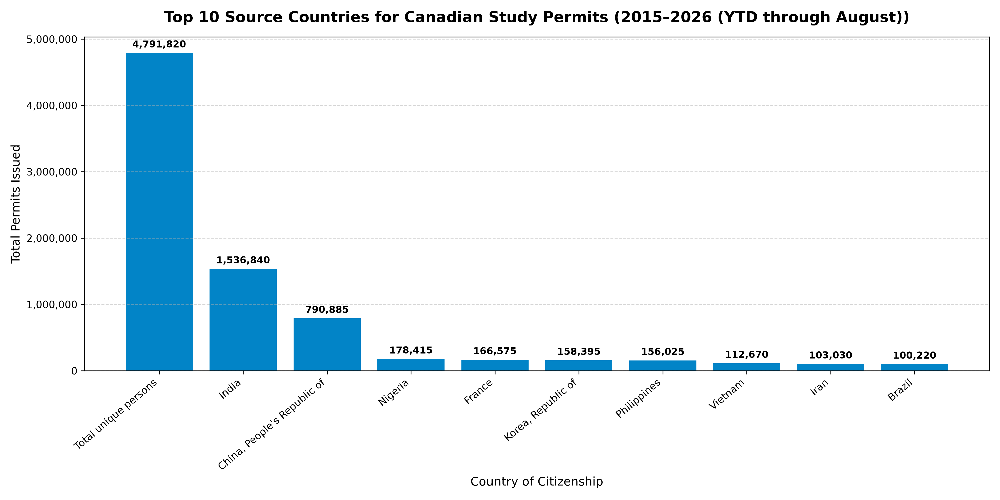
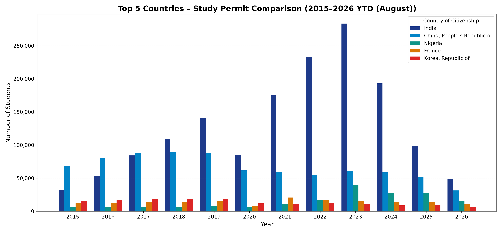
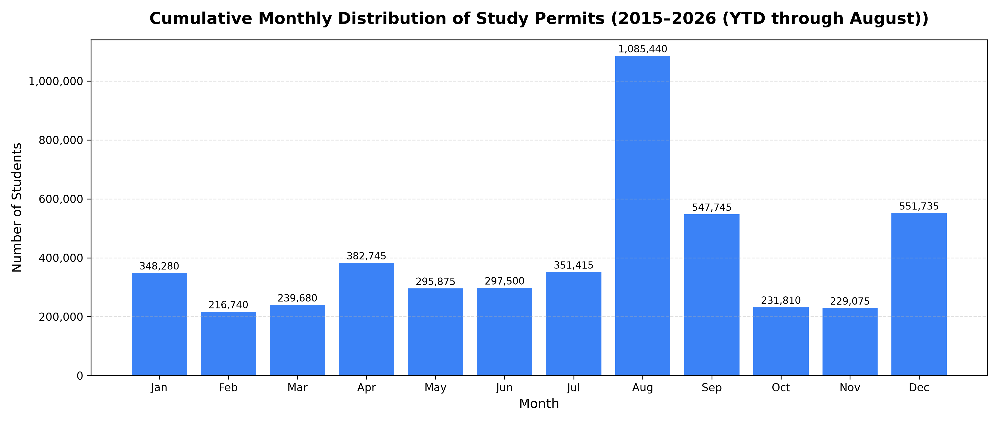

The Shift in Canadian Study Permits
An empirical analysis of international student flows into Canada, from historic expansion through peak intake and the measurable impact of federal policy caps.
Chapter 1: The Decade of Growth & The 2023 Peak
Between 2015 and 2023, Canada experienced an unprecedented surge in international student enrollment. Following the 2020 pandemic slowdown, the country rapidly reopened its doors, driving permit issuance from ~527,000 in 2020 to an all-time peak of 1,401,690 in 2023.

Chapter 2: Top Source Countries
A small concentration of countries constitutes the primary backbone of Canada’s international student population. Over the 2015–2026 timeframe, India, China, Nigeria, the Philippines, and France remain the top 5 source nations.


Chapter 3: The "August Rush" & Seasonality
Permit issuance adheres to an extremely rigid seasonal rhythm aligned with Canadian higher education academic intake calendars.

Chapter 4: Measuring the Policy Cap Impact (2024 – 2026)
In early 2024, Immigration, Refugees and Citizenship Canada (IRCC) introduced an intake cap on study permit applications to stabilize growth. The data reveals the decisive impact of these policies:
- 2024: Permit issuance dropped -19.9% compared to the 2023 peak.
- 2025: Contraction intensified with a -34.8% decline as provincial attestation letters (PALs) and stricter criteria took full effect.
- 2026 (YTD through August): Issuance volumes stabilized at 478,690, tracking closely (-2.4%) with the aligned 2025 window.